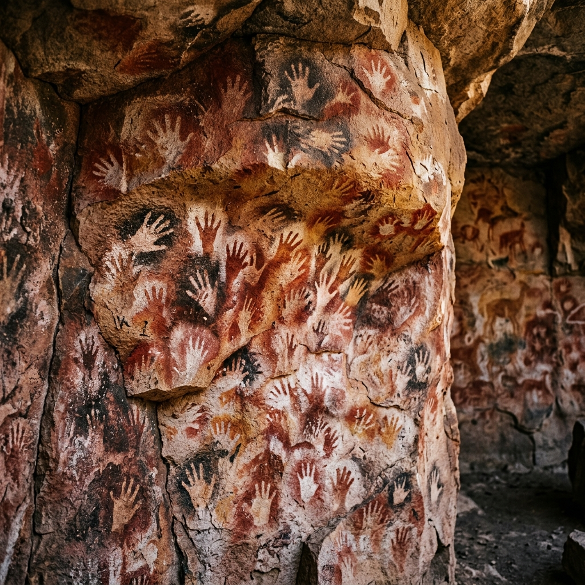
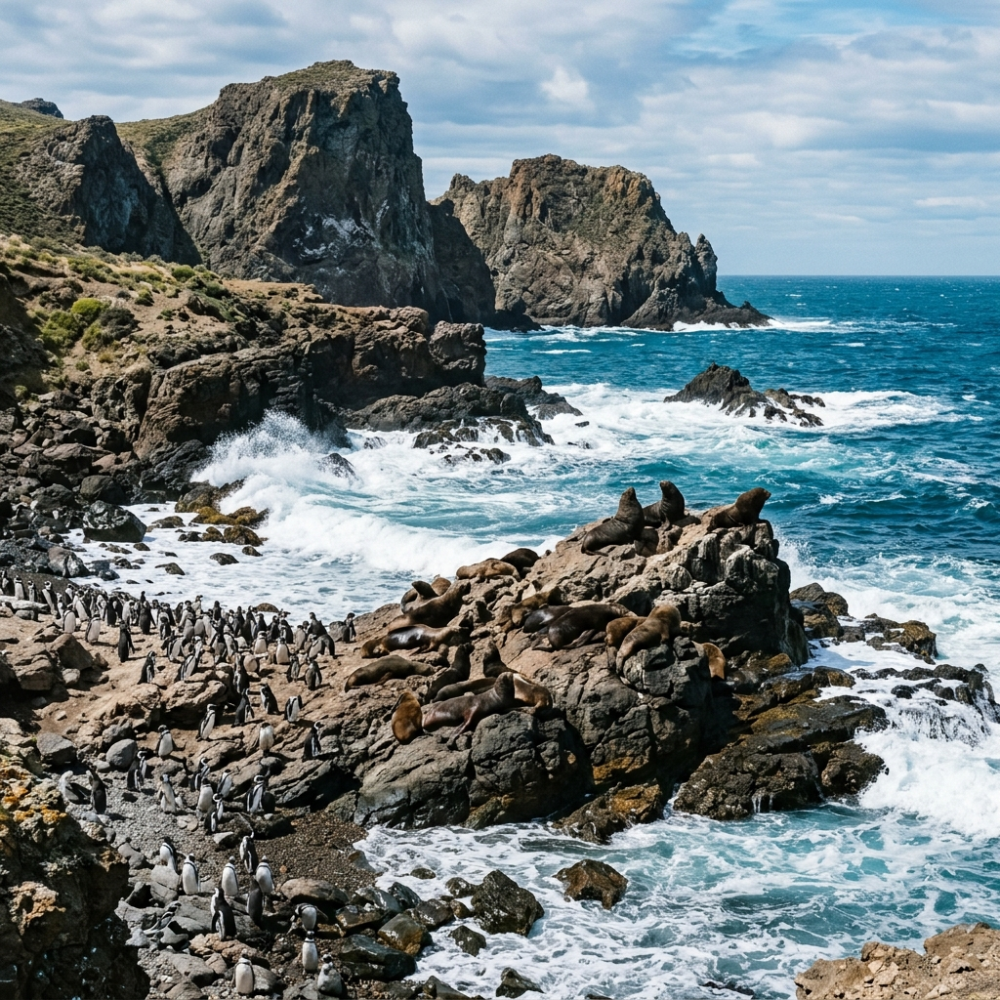

Naturaleza Salvaje
Glaciares milenarios, lagos cristalinos y bosques patagónicos que te conectan con lo esencial.
Una provincia única en el mundo, donde la naturaleza se expresa en su forma más pura.
Glaciares milenarios, lagos cristalinos y bosques patagónicos que te conectan con lo esencial.
Trekking, escalada en hielo, kayak y cabalgatas. El Chaltén es la capital nacional del trekking.
La Cueva de las Manos, Patrimonio de la Humanidad, guarda pinturas rupestres de más de 9.000 años.
Cordero patagónico al palo, centolla fueguina, chocolates artesanales y cerveza craft de la región.
Explorá los rincones más increíbles de Santa Cruz. Filtrá por categoría o buscá tu próximo destino.
Mostrando 8 de 8 destinos
Uno de los pocos glaciares en el mundo que sigue avanzando. Sus 5 km de frente y 60 metros de altura sobre el agua lo convierten en un espectáculo natural único.
Ver másLa cumbre más icónica de la Patagonia y capital nacional del trekking. El sendero a la Laguna de los Tres es una experiencia que todo aventurero debe vivir.
Ver más
CulturaPatrimonio de la Humanidad por la UNESCO. Alberga pinturas rupestres de más de 9.000 años, incluyendo las famosas manos en negativo de los pueblos originarios.
Ver másTroncos fosilizados de más de 150 millones de años se conservan en la estepa patagónica. Un viaje al pasado geológico de la Tierra a cielo abierto.
Ver másEl lago más grande de la Patagonia argentina. Sus aguas turquesa albergan témpanos de hielo y son el punto de partida para navegar hacia los glaciares.
Ver más
AventuraUn paraíso de fauna marina: pingüinos de Magallanes, lobos marinos, delfines de Commerson y cormoranes. La ría del Deseado es un ecosistema único.
Ver másUn cañón espectacular que alberga la Cueva de las Manos en sus paredes. El río serpentea entre formaciones rocosas de colores intensos en plena estepa.
Ver másViví la experiencia gaucha: cabalgatas, esquila de ovejas y el legendario cordero patagónico al palo. Turismo rural auténtico en la inmensidad de la estepa.
Ver más😕 No encontramos destinos con esa búsqueda. Probá con otro término o seleccioná otra categoría.
Experiencias reales de quienes ya descubrieron la magia de Santa Cruz.
"Ver el desprendimiento del Perito Moreno fue la experiencia más impactante de mi vida. El sonido del hielo cayendo al agua es algo que no se olvida jamás."
"El trekking a la Laguna de los Tres fue durísimo, pero cuando llegué y vi el Fitz Roy de frente... entendí por qué le dicen la capital del trekking."
"Las estancias patagónicas te transportan a otra época. Comimos el mejor cordero al palo de nuestra vida y los atardeceres en la estepa son mágicos."
Todos los campos marcados con (*) son obligatorios.
Secretaría de Estado de Turismo de Santa Cruz.
Av. Presidente Kirchner 863, Río Gallegos, Santa Cruz (CP 9400)
Lunes a Viernes de 08:00 a 20:00 hs. Sábados y Domingos de 10:00 a 18:00 hs.
Av. Pres. Kirchner 863, Río Gallegos